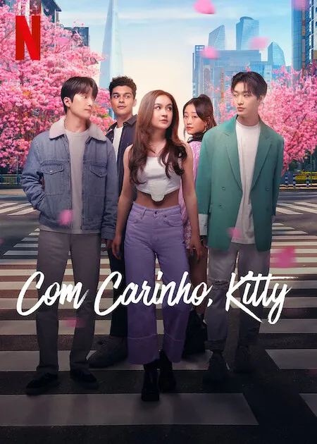

XO, Kitty
Sinopse
XO, Kitty (bra: Com Carinho, Kitty; prt: XO, Kitty) é uma série de televisão americana de comédia romântica e dramática criada por Jenny Han para a Netflix, lançada em 18 de maio de 2023. A série é um spin-off da franquia de filmes To All the Boys (baseada na trilogia de livros To All the Boys I've Loved Before, de Han) e marca a primeira série da Netflix derivada de um filme original da plataforma. Han atua como roteirista, produtora executiva e showrunner da série. Anna Cathcart reprisa o papel principal como Kitty Song Covey, uma estudante do ensino médio que embarca em sua própria jornada para encontrar o amor verdadeiro e conhecer melhor o passado de sua mãe. A série recebeu críticas positivas.
Em junho de 2023, a série foi renovada para uma segunda temporada, que estreou em 16 de janeiro de 2025.

Elenco e personagens
Principal
-
Anna Cathcart como Katherine "Kitty" Song Covey
-
Choi Min-young como Dae-heon "Dae" Kim
-
Gia Kim como Yuri Han
- Sang Heon Lee como Min Ho Moon
-
Anthony Keyvan como Quincy "Q" Shabazian
- Peter Thurnwald como Professor Alex Finnerty Lee
-
Regan Aliyah as Juliana Porter (2ª temporada; convidada na 1ª temporada)
- Philippe Lee como Young Moon (2ª temporada)
- Audrey Huynh como Esther Shim / Stella Cho (2ª temporada)
Recorrente
- Yunjin Kim como Diretora Ji-na Lim (1ª temporada)
- Michael K. Lee como Professor Daniel Lee
- Jocelyn Shelfo como Madison Miller
- Lee Sung-wook como Sr. Kim
- Théo Augier Bonaventure como Florian (1ª temporada)
- Lee Hyung-chul como Sr. Han (1ª temporada)
- Sunny Oh as Mi-hee
- Ryu Han-bi como Eunice Kang
- Sasha Bhasin como Praveena Bhakti (2ª temporada)
- Joshua Lee como Jin Lee (2ª temporada)
Episódios
Informações de Lançamento da Série
| Temporada |
Episódios |
Originalmente exibido |
| 1 |
10 |
18 de maio de 2023 |
| 2 |
8 |
16 de janeiro de 2025 |
Produção
Em março de 2021, foi anunciado que um spin-off de To All the Boys estava em desenvolvimento, com episódios de meia hora no formato de comédia romântica. A série foi desenvolvida como um exclusivo da Netflix, em parceria com Awesomeness e ACE Entertainment. A autora dos livros, Jenny Han, foi confirmada como criadora, roteirista e produtora executiva, além de ter escrito o roteiro do episódio piloto junto com Siobhan Vivian. Anna Cathcart também foi escalada para reprisar seu papel como Kitty Song Covey. Seis meses depois, a Netflix encomendou dez episódios e revelou outros membros da equipe. Sascha Rothchild e Matt Kaplan se juntaram a Han como produtores executivos, com Rothchild atuando como showrunner ao lado de Han. Em 5 de abril de 2022, Choi Min-yeong, Anthony Keyvan, Gia Kim, Sang Heon Lee, Peter Thurnwald e Regan Aliyah foram escalados como personagens regulares da série, enquanto Yunjin Kim, Michael K. Lee e Jocelyn Shelfo se juntaram ao elenco em papéis recorrentes. Nessa data, a produção já havia começado em Seul. Gia Kim e Sang Heon Lee, que interpretam Yuri e Min Ho, respectivamente, são irmãos na vida real.
Em 14 de junho de 2023, a Netflix renovou a série para uma segunda temporada. Em 25 de abril de 2024, foi anunciado que a produção da segunda temporada havia começado em Seul, sendo lançada em 16 de janeiro de 2025.
Lançamento
XO, Kitty foi lançado na Netflix em 18 de maio de 2023. A segunda temporada foi lançada em 16 de janeiro de 2025.
Recepção
Na primeira temporada, o site agregador de críticas Rotten Tomatoes registrou uma aprovação de 81%, com uma classificação média de 5,8/10, baseada em 27 avaliações de críticos. O consenso dos críticos no site diz: "Uma extensão modesta e fofa de todos os filmes que os fãs já amaram, XO, Kitty mira direto no coração e acerta o alvo." O Metacritic, que utiliza uma média ponderada, atribuiu uma pontuação de 68 de 100, com base em oito críticas, indicando "avaliações geralmente favoráveis".
A segunda temporada possui uma aprovação de 80% no Rotten Tomatoes, com base em 10 avaliações de críticos e uma classficação média de 6,4/10. No Metacritic, a temporada recebeu uma pontuação média ponderada de 68 de 100, baseada em 4 críticas, indicando "avaliações geralmente favoráveis".